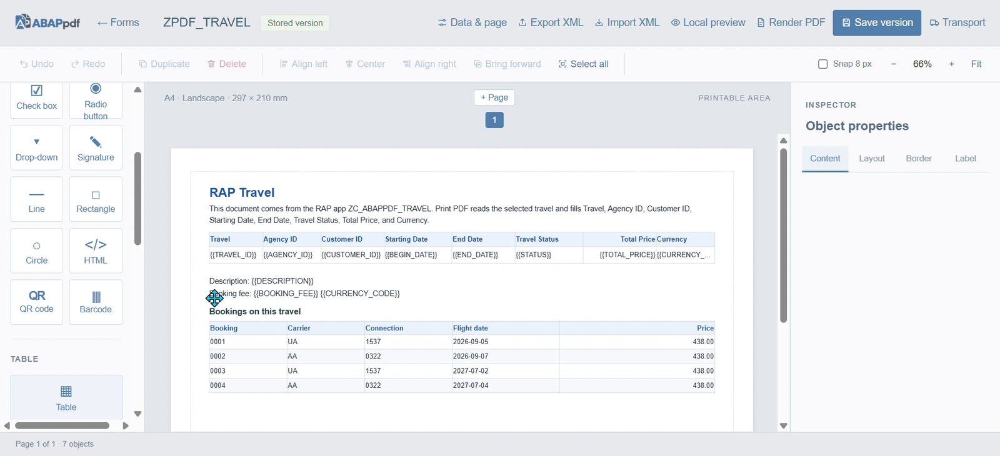
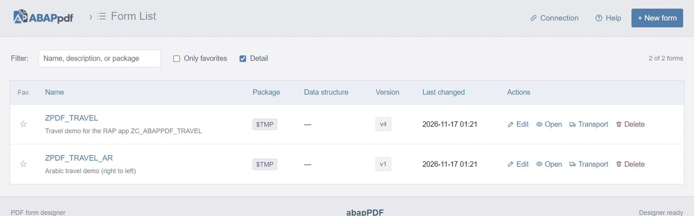
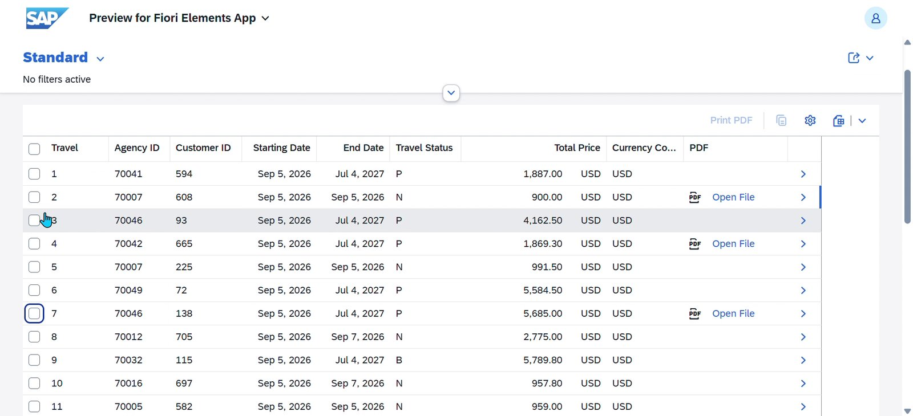
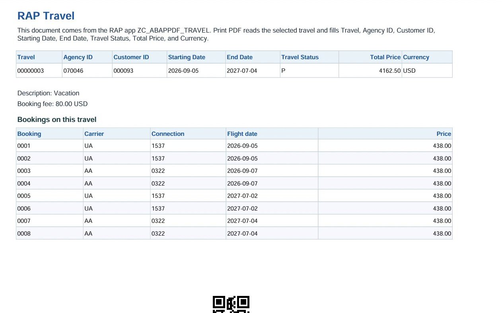

PDF forms, designed and rendered in pure ABAP
ABAPpdf is an open-source form designer and PDF renderer for SAP. Design a form in the browser, bind it to ABAP data, and get a PDF from one method call.
What you can do
Everything runs inside the ABAP system: the designer, the form store, and the PDF engine.
Drag-and-drop designer
Lay out forms in the browser (ABAP Cloud) or in SAP GUI (classic ABAP), with undo, alignment, snapping and a local preview.
Rich elements
Text, input fields, check boxes, radio buttons, dropdowns, signatures, shapes, images, tables with totals, QR codes and Code 128 barcodes.
PDF engine in ABAP
A3, A4, A5, Letter and Legal, portrait or landscape, headers and footers with page numbers, and tables that continue over several pages.
Template binding
Bind any ABAP structure with {{FIELD}} tags: loops, conditions, totals, and number and date formats.
Versions and transports
Forms are stored in ABAP tables with versions, exported or imported as XML, and moved between systems with transport requests.
RAP integration
A Fiori elements demo app prints the selected record with one Print PDF action and attaches the PDF to it.
Arabic and right to left
Letter shaping, right-to-left pages and tables, and mixed Arabic and Latin text with an embedded font subset.
Install with abapGit
Pull the repository into a package and activate. The classic edition can also be installed as one program.
Optional Gotenberg
The native engine is the default. For full HTML and CSS, an optional Gotenberg server can be used through a destination.
See it in action
Screenshots from the ABAP Cloud edition on SAP BTP.




/DMO/TRAVEL.Two editions
The same idea and the same template syntax, built for each ABAP world.
ABAPpdf Cloud
For the SAP BTP ABAP environment and ABAP Cloud development on S/4HANA (2022 or higher). Uses released APIs only.
- Web designer served by the system itself
- HTTP API for forms, versions and rendering
- RAP demo with a Print PDF action
- Package
ZABAPPDF_CLOUD
ABAPpdf
For SAP NetWeaver ABAP 7.40 SP08 or higher and SAP S/4HANA on-premise.
- Designer in SAP GUI (Edge WebView2 recommended)
- One-program install with
ZABAPPDF_STANDALONE - Flight demo with download and e-mail
- Authorization groups for view, edit and admin
Get started
Both editions install with abapGit. The full steps are in each repository's README.
ABAP Cloud
- Create package
ZABAPPDF_CLOUDin ADT (on the BTP trial, underZLOCAL). - Link the repository with the abapGit plug-in for ADT, pull, and activate all objects.
- Create HTTP service
ZABAPPDF_HTTPwith handler classZCL_ABAPPDF_HTTP. - Open the service URL in a browser. The demo forms are added on the first visit.
Classic ABAP
- Create package
ZABAPPDF. - Pull the repository with abapGit and activate all objects.
- Run
ZABAPPDF_STANDALONE. Two demo forms are installed on the first start. - Run
ZABAPPDF_DEMO_FLIGHTSto print a passenger list with data.
Use it in your code
" ABAP Cloud
DATA(lv_pdf) = zcl_abappdf_api=>render_pdf(
iv_form_id = 'ZPDF_TRAVEL'
is_data = ls_doc )." Classic ABAP
DATA(lv_pdf) = zcl_pdf_api=>render_pdf(
iv_form_id = 'ZMY_FORM'
is_data = ls_doc ).The component names of ls_doc are the template tags: ls_doc-customer fills {{CUSTOMER}}, and a table component items repeats with {{#each ITEMS}}.
Template syntax
Simple tags, filled from ABAP data at print time.
| Syntax | Meaning |
|---|---|
{{FIELD}} | Value of a field, HTML-escaped |
{{HEADER.FIELD}} | Field of a nested structure |
{{#each ITEMS}} … {{/each}} | Repeat for every row of a table |
{{ROW}} | Row number inside {{#each}} |
{{#if FIELD}} … {{else}} … {{/if}} | Condition; also ROW_EVEN and ROW_ODD |
{{sum ITEMS.AMOUNT}}, {{count ITEMS}} | Totals at print time; also avg, min, max |
data-fmt="#,##0.00" | Number and date formats, such as #.##0,00, DD.MM.YYYY, YYYY-MM-DD |